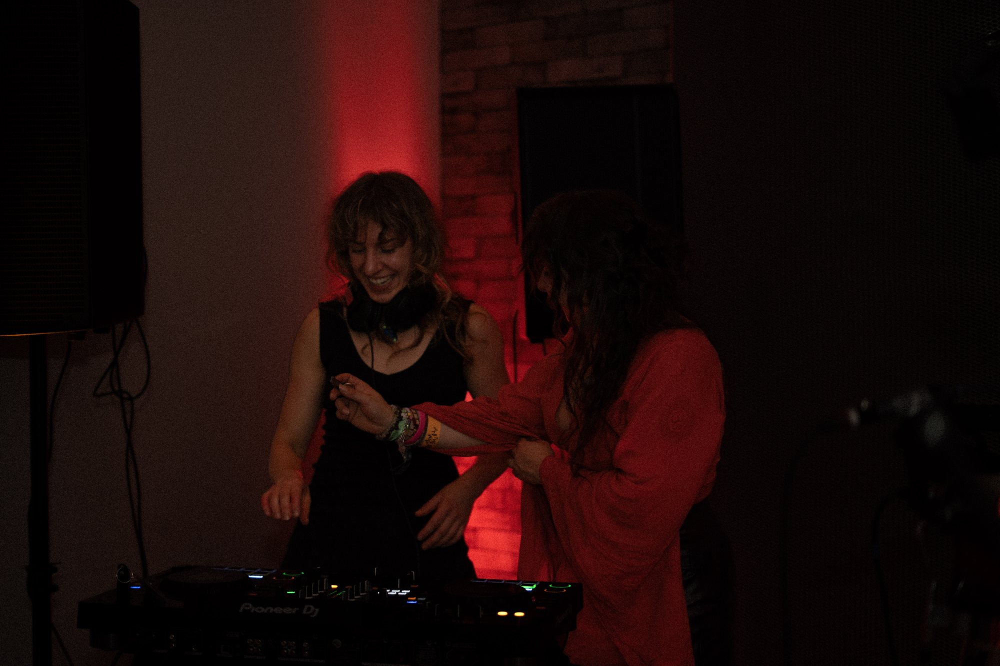
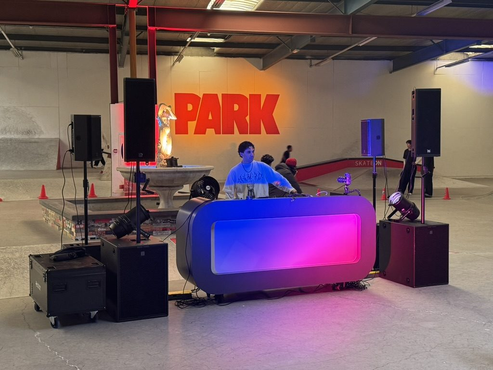
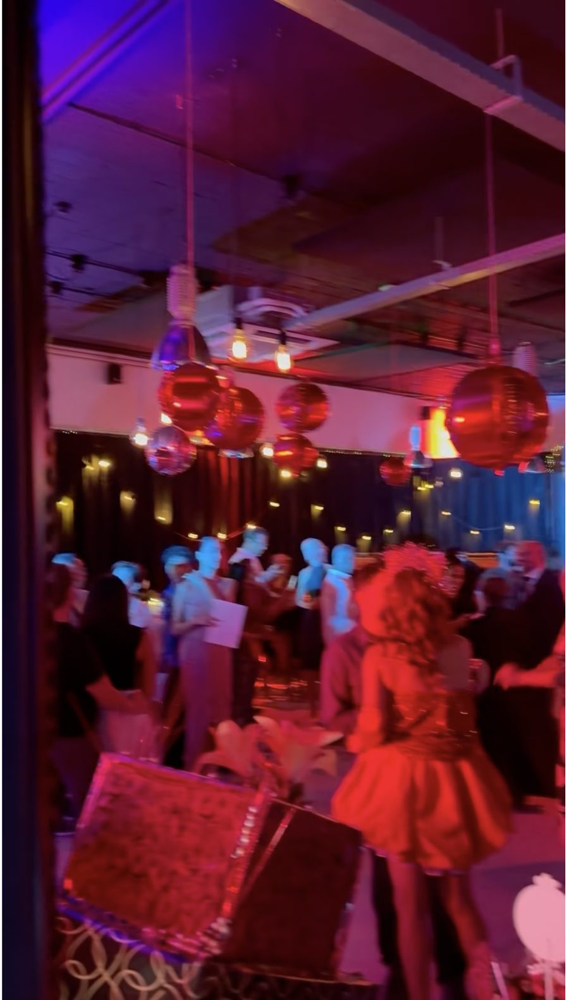

Organisatoren van
(dance) events

Je wilt dat je feest klinkt als een goede club. Ook als het plaatsvindt in een loods, een skatehal of een ruimte die maar één nacht van jou is.
Als promotor of collectief werk je met een andere locatie per avond, korte opbouwtijden en dj's met een rider. Geef je een eigen feest, dan wil je hetzelfde niveau als de clubs waar je zelf graag komt.
Wij zorgen dat de dansvloer de hele avond werkt: geluid dat overal goed klinkt, een booth waar elke dj meteen kan draaien en licht dat past bij het moment.
Ons geluid
Gelijkmatig, warm en doorgerekend
Een goed geluidssysteem is niet het hardste systeem. Het geluid ligt gelijkmatig over de dansvloer: vooraan niet te hard, achterin niet dun. Het geluid is vol, goed verstaanbaar en niet schel, zodat het voor bezoekers prettig blijft.
Daarvoor werken we met twee merken die hun hele systeem zelf ontwerpen en bouwen. Brooklyn Audio uit Nederland ontwerpt al zijn kasten met dezelfde fasekarakteristiek. Daardoor kun je ze in elke combinatie inzetten zonder dat het geluid uit elkaar valt, en klinkt een kleine opstelling hetzelfde als een grote. Van RCF uit Italië gebruiken we de KX-serie, de nieuwe topserie van het merk, met tops die de directheid van een point source combineren met de worp van een line source.
Het systeem is modulair: dezelfde familie speakers past in een compacte ruimte en in een zaal tot 35 meter diep. De opstelling rekenen we vooraf door op de afmetingen van jouw zaal.
Wat we je bieden
Geluid en booth
- Een modulair geluidssysteemGeschikt voor compacte tot grote ruimtes, doorgerekend op jouw zaal
- Subs in cardioïde opstellingHet laag blijft op de dansvloer en loopt niet het podium en de booth in
- Een rider-proof boothCDJ-3000X met V10 of Euphonia
- Een forward booth, als je dat wiltDe dj staat meer de ruimte in, met een danszone om zich heen. De monitoring werkt daar als tweede PA.
Licht
- Moving heads die je op veel manieren inzetSierlijk in de opbouw van de avond, impactvol op het hoogtepunt
- Sfeerlicht dat de ruimte vormgeeftDraadloze washlights op muren, pilaren en staal
- Vintage clublichtOpgeknapte verlichting uit de clubs van de jaren 90, zoals Astrodisco en Golden Scan
Meer over atmosfeerlicht en dansvloerlicht
Line-up
- Een complete line-upWe stellen de hele avond samen, of vullen jouw line-up aan
- Live muzikanten bij een dj-setPercussie, saxofoon of vocals
Meer over dj's en artiesten
Speciale wensen? Laat het weten.
Zo werken we
Intake
Concept, line-up, aantal gasten en de ruimte. Hier bepalen we wat de avond nodig heeft.
- 1Intake
Concept, line-up, aantal gasten en de ruimte. Hier bepalen we wat de avond nodig heeft. - 2Locatiebezoek of foto's en plattegrond
We bekijken vooraf de ruimte: akoestiek, stroom, opbouwtijden en de buren. - 3Voorstel
Een opzet voor geluid, licht en booth, met een duidelijke prijs. - 4Riders en planning
We leggen de riders van je dj's naast de booth en stemmen opbouw en changeovers af. - 5Opbouw en soundcheck
Een korte soundcheck, ook als de tijd krap is. - 6Op de avond zelf
Eén aanspreekpunt voor licht, geluid en booth, tot de laatste plaat.
Organiseer je een clubnacht, pop‑up of eigen feest?
Laat je gegevens achter, dan neem ik contact met je op.

Deze organisatoren gingen je voor

Pop-up feest tijdens ADE, in een skatehal
Franse DJ Rivo & friends | nauwelijks soundcheck | locatie ombouw

Privéfeest voor 150 gasten, met meerdere dj's
Gewone zaal, kleurrijke dansvloer

Live percussie tijdens ADE, in dramatisch rood
Melandru | Raw Drums